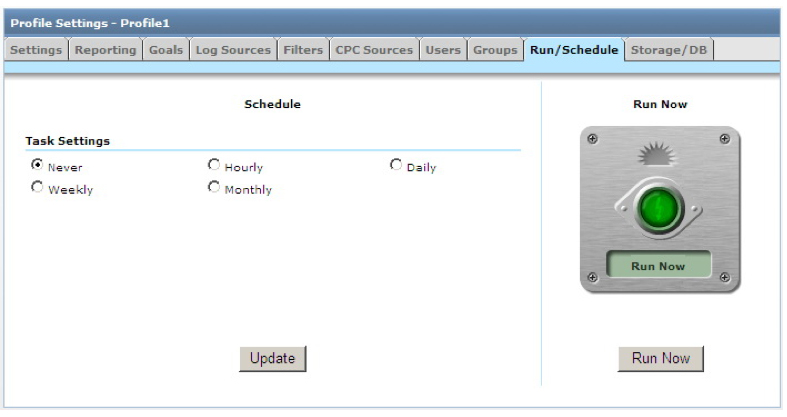
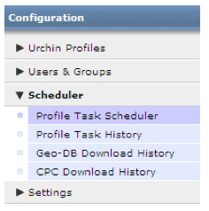

Gestion du planificateur de tâches
Présentation
Le planificateur de tâches est au centre du système nerveux d'Urchin. Il est responsable de la planification et de l'exécution des événements Urchin de traitement des journaux pour l'ensemble des profils. Le planificateur vous permet d'effectuer des tâches immédiatement ou de les ajouter à la liste des événements Urchin à déclencher de façon régulière selon l'intervalle de votre choix.
Utilisation du planificateur
- Connectez-vous à Urchin 6 et cliquez sur "Configuration" (en haut à droite de l'interface).
- Cherchez le profil à planifier, puis cliquez sur "Modifier".
- Cliquez sur l'onglet "Exécuter/Planifier".
- Sous "Paramètres des tâches", sélectionnez l'intervalle souhaité. "Quotidien" est le paramètre recommandé.
- Définissez l'heure d'exécution de la tâche.
- Cliquez sur "Mettre à jour" pour enregistrer les modifications.
- Pour lancer la tâche immédiatement, cliquez sur "Exécuter". Les autres tâches seront effectuées selon le calendrier que vous avez établi.

Recommandations
- La majorité des tâches doivent être exécutées quotidiennement, car de nombreux serveurs Web effectuent la rotation de leurs journaux à cette fréquence. Toutefois, l'outil de suivi des journaux Urchin offre la possibilité d'analyser un même journal à plusieurs reprises sans générer de données en double. Cette règle n'est donc pas obligatoire.
Remarques sur le fonctionnement du planificateur
- Urchin gère les tâches une par une. Par conséquent, les tâches planifiées au même moment sont effectuées l'une après l'autre.
- Pour connaître le résultat des tâches exécutées, consultez l'historique des tâches accessible via le menu de navigation, à gauche dans le planificateur.

Sections du planificateur :
- Planificateur de tâches du profil : cet écran affiche les tâches planifiées pour chaque profil de la configuration. Plusieurs informations sont disponibles pour chaque profil, notamment le nom du profil, la fréquence d'exécution, l'état de l'exécution (Non planifié, En attente, Placé en file d'attente, Exécution) et, pour les tâches en cours d'exécution, le pourcentage d'exécution et l'heure de démarrage de la tâche.
- Historique des tâches du profil : cet écran permet de dresser la liste des tâches exécutées via le planificateur de tâches du profil ou le bouton "Exécuter". Un résumé des tâches est proposé, accompagné d'informations importantes sur chaque tâche.. Vous pouvez cliquer sur le champ "État" pour consulter les détails de l'historique d'exécution d'une tâche.
Base de données géographique - Historique des téléchargements (Urchin 6.500+) : précédemment appelée "geo-update", cette section faisait partie du planificateur de tâches du profil. Cette section du planificateur affiche l'historique de tous les téléchargements de base de données géographique effectués par le planificateur de tâches du profil. Un résumé des téléchargements est proposé, accompagné d'informations importantes sur chacun d'entre eux. Vous pouvez cliquer sur le champ "État" pour consulter les détails de l'historique d'exécution d'une tâche. Vous pouvez planifier le téléchargement de la base de données géographique en cliquant sur Paramètres -> Paramètres globaux -> Mise à jour des données géographiques. Vous pouvez également modifier le planificateur CPC en cliquant sur Paramètres -> Paramètres globaux -> Mise à jour de la source de CPC.
Historique des téléchargements de CPC (Urchin 6.500+) : l'objet de cet écran est de présenter l'historique de tous les téléchargements de CPC effectués par le planificateur de tâches liées au CPC. Un résumé des téléchargements de CPC est proposé, accompagné d'informations importantes sur chacun d'entre eux. Vous pouvez cliquer sur le champ "État" pour consulter les détails de l'historique d'exécution d'une tâche. Vous pouvez configurer le téléchargement de la source de CPC de deux façons : à partir de l'écran Gestionnaire de sources de CPC (Gestionnaire de sources de CPC -> Télécharger ou Modifier-> onglet Planifier -> définir un calendrier de téléchargement ou forcer le téléchargement en cliquant sur le bouton Télécharger maintenant).